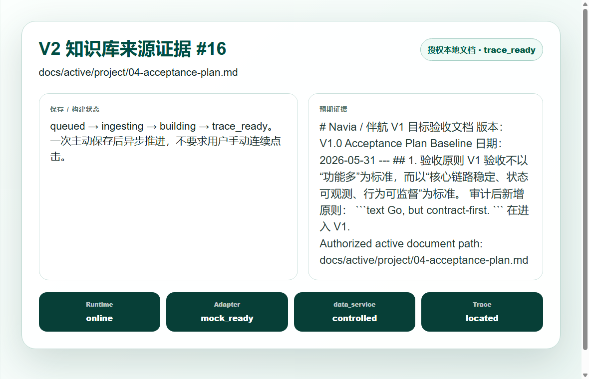
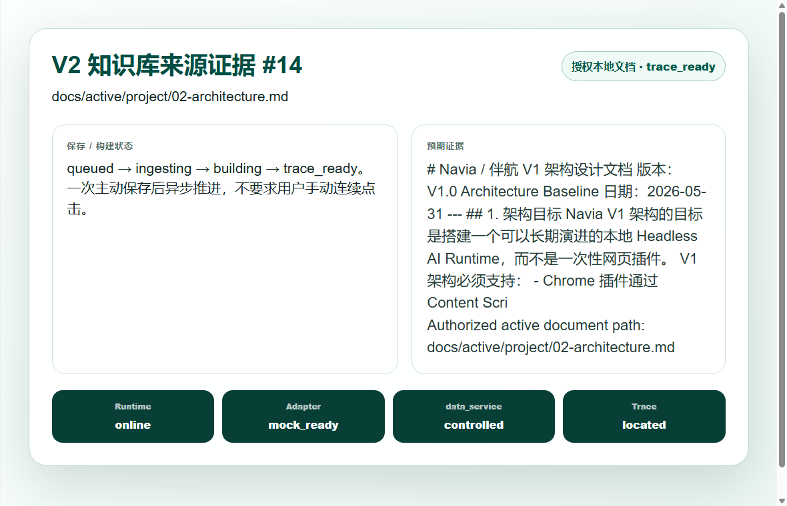
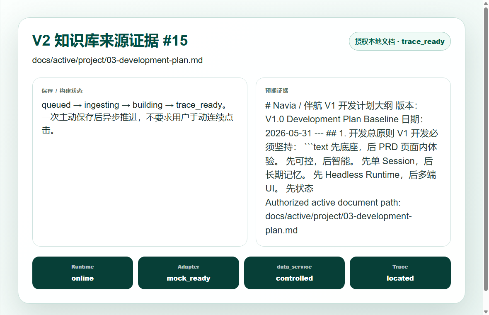
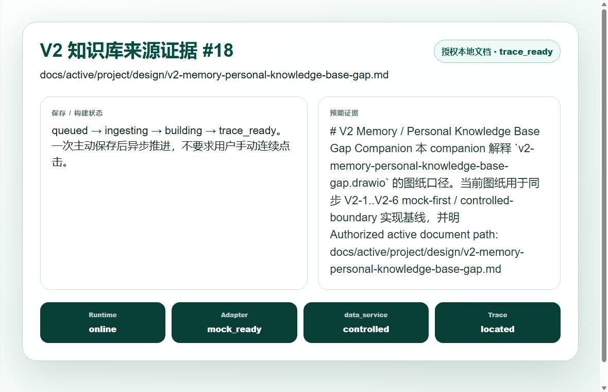
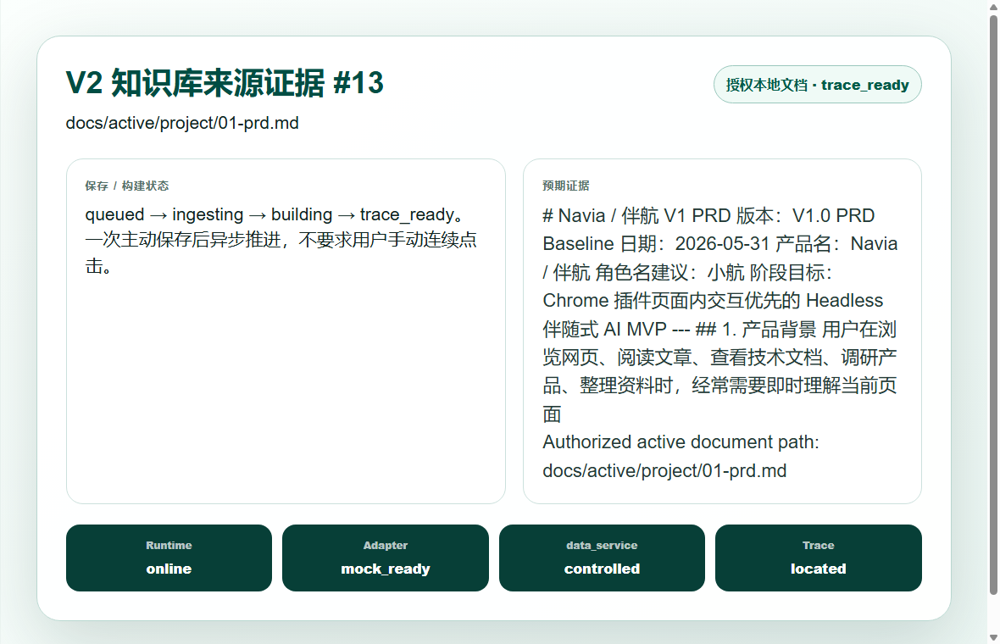
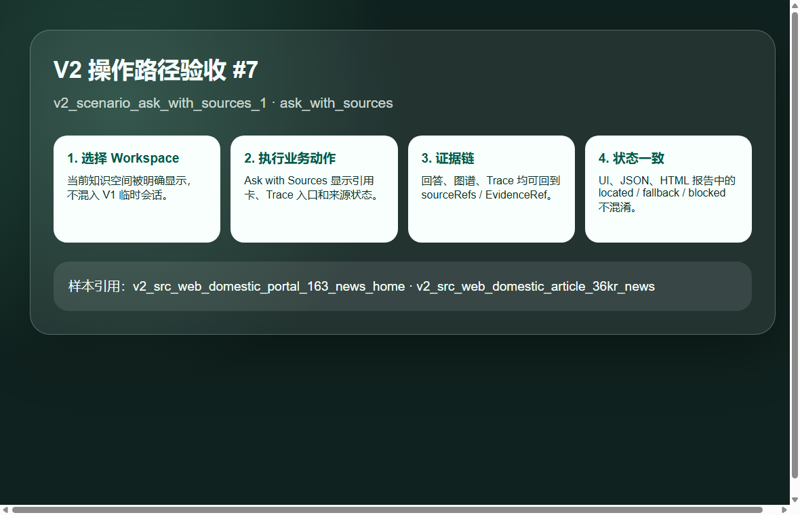
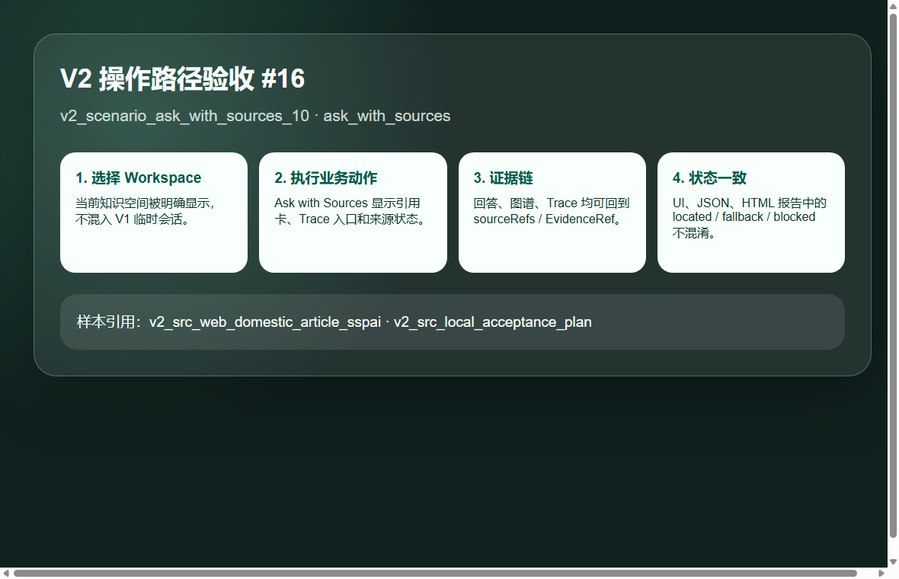
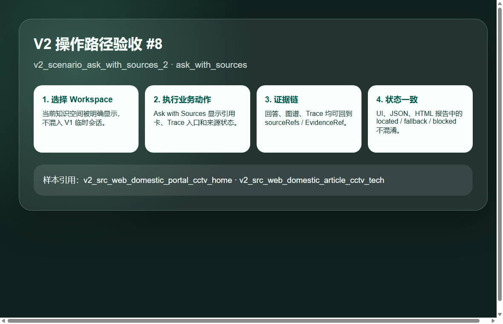

1. 阶段结论
V2 Memory / Personal Knowledge Base passed planning-aligned local knowledge acceptance.
服务状态覆盖：runtime_offline, adapter_blocked, data_service_unreachable, source_build_failed。这轮修复后覆盖 Runtime offline、Adapter blocked、data_service unreachable、source build failed 四类验收要求。
2. 目标架构与当前实现
| 架构平面 | 审计观察 | 结论 |
|---|---|---|
| P2 Side Panel UI | Knowledge Workspace、SaveToKnowledgeCard、ServiceStatusBanner、KnowledgeBuildStatus 已实现并截图验收 | PASS |
| P3 Runtime Client | runtimeClient V2 knowledge section 作为 B UI 唯一 Runtime 入口 | PASS |
| P4 Local Runtime API | /v1/knowledge/* 与 /v1/knowledge/status 基线通过 pytest | PASS |
| P5 V2 Adapter / Governance | Mock-first / controlled-boundary adapter、权限、forget、trace 通过测试与报告 | PASS |
| P6 data_service Candidate | 仍为受控候选边界，未声明生产集成完成 | PASS with boundary |
| P7 Evidence | sample-manifest、report、HTML、screenshots、PRD review、false-green audit 已存在并通过 validator | PASS |
drawio 文件：docs/active/project/design/v2-memory-personal-knowledge-base-gap.drawio。解析结果：8 页；包含 V2-7、目标架构、当前架构、出门条件、data_service、ServiceStatusBanner、KnowledgeBuildStatus。当前已同步为 V2-7 已通过状态。
3. 验收命令
| 命令 | 结果 | 说明 |
|---|---|---|
npm --prefix apps/chrome-extension run typecheck | PASS | TypeScript 类型检查通过 |
PYTHONPATH=services/local-runtime python3 -m pytest services/local-runtime/tests/test_v2_data_service_client.py services/local-runtime/tests/test_v2_memory_knowledge_api.py | PASS | 8 个 V2 Runtime / data_service client 测试通过，5 个 deprecation warning，不影响结果 |
npm --prefix apps/chrome-extension run e2e:chrome:v2-memory-personal-knowledge | PASS | 生成 24 source 截图、42 scenario 截图，并通过 V2 report validator |
npm --prefix apps/chrome-extension run validate:v2-memory | PASS | schema + semantic validator 通过 |
npm --prefix apps/chrome-extension run build | PASS | WXT production build 通过；存在 chunk size warning |
4. 用户场景截图证据








完整截图目录：docs/active/project/evidence/v2_memory_personal_knowledge_base/screenshots/，共 66 张 PNG。
5. PRD 与 False-Green 审计
- PRD review：
prd-review.md，结论 PASS。 - False-green audit：
false-green-audit.md，结论 PASS。 - Schema / semantic validator：
validate:v2-memoryPASS。 - 不把 V2-1..V2-6 mock-first evidence 替代 V2-7；当前 V2-7 有独立 manifest/report/HTML/screenshots。
- 不声明 V2 implemented、V2 ready、V2 Memory/RAG ready、默认本地文件读取、data_service console 等同 Navia UI。
6. 非阻塞残余风险
| 风险 | 说明 |
|---|---|
| Playwright Chromium 依赖缺失 | 本机 WSL 缺 libnspr4.so，自动化已降级为 Windows Chrome CLI headless 截图；报告明确记录，不作为失败。 |
| V2 不等于 V2 ready | 本阶段只允许 planning-aligned local knowledge acceptance；真实 data_service 产品化、持久化一致性和删除级联仍需新阶段。 |
| 前端专项 vitest 缺口 | 当前前端覆盖依赖 typecheck、build 和可视化证据；尚无 Knowledge Workspace 组件级 vitest。 |
| drawio 状态全绿但 No-Go 仍存在 | drawio 已同步 V2-7 出门达成；No-Go 作为禁止声明边界保留。 |
7. 审计评价
可以声明本阶段自动化开发与阶段性验收通过，范围限定为 planning-aligned local knowledge acceptance。当前 drawio 目标架构、开发内容、出门条件与 V2-7 证据包一致；没有发现需要打回开发阶段的 fatal / major 阻塞。